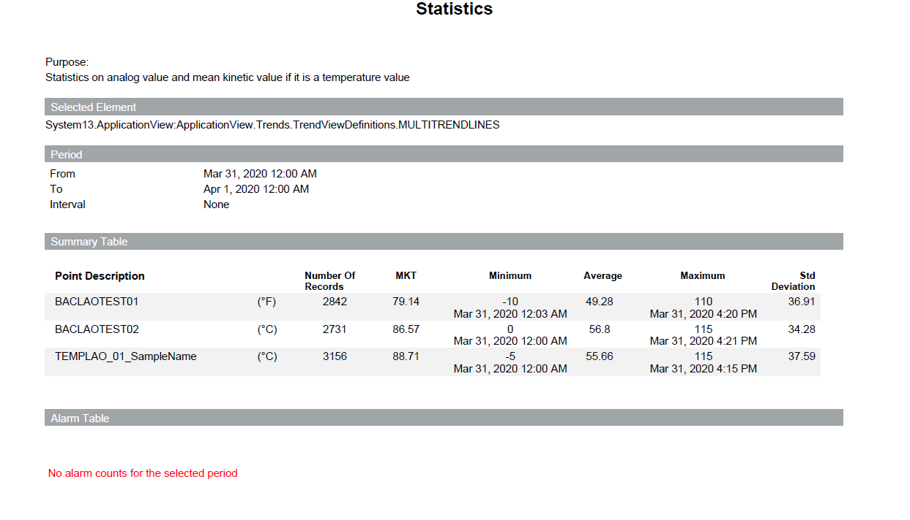

Custom Statistics Summary Report 1
This report is designed to show key statistical summaries including Mean Kinetic Temperature (MKT). The report is designed to display for each point calculated fixed temperature that simulates the effects of temperature variations over a period of time, calculated by an MKT Summary point. In particular, this report reflects the data as follows for each point:
- Number of Records: the number of valid records available for the point.
- MKT: it displays when the unit is temperature-related. If a unit is not temperature-related, this column does not display.
- Minimum and Maximum: temperature values along with the recorded date and time of the values.
Sample report
